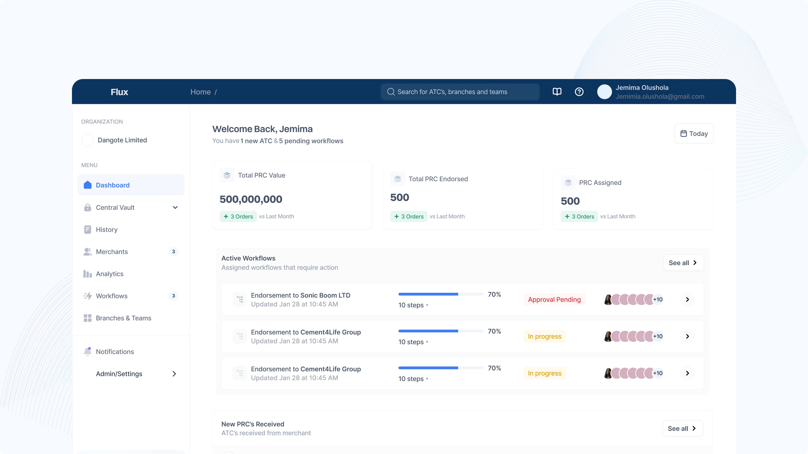
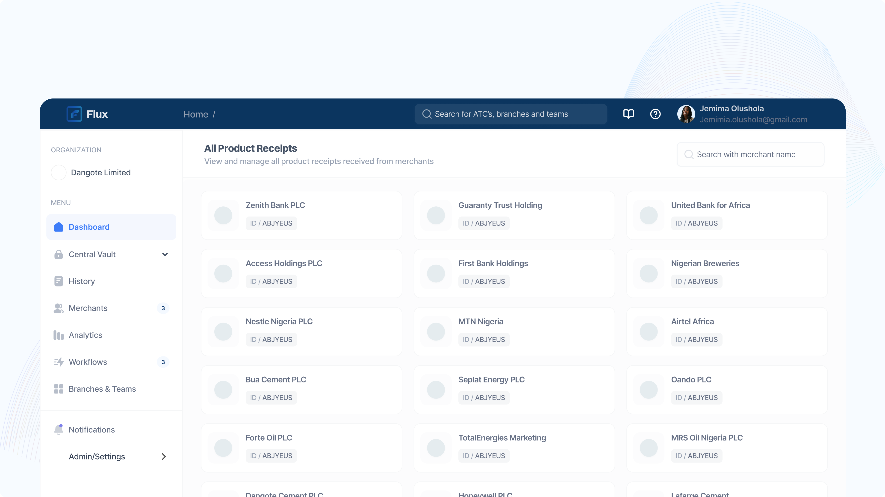
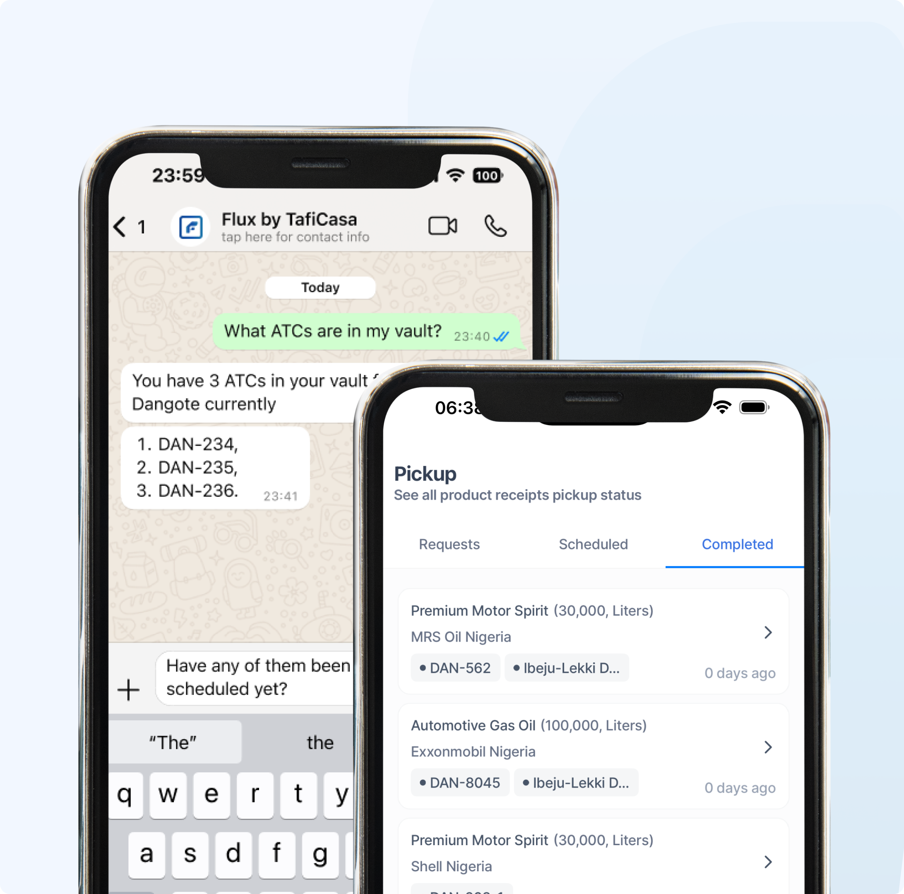
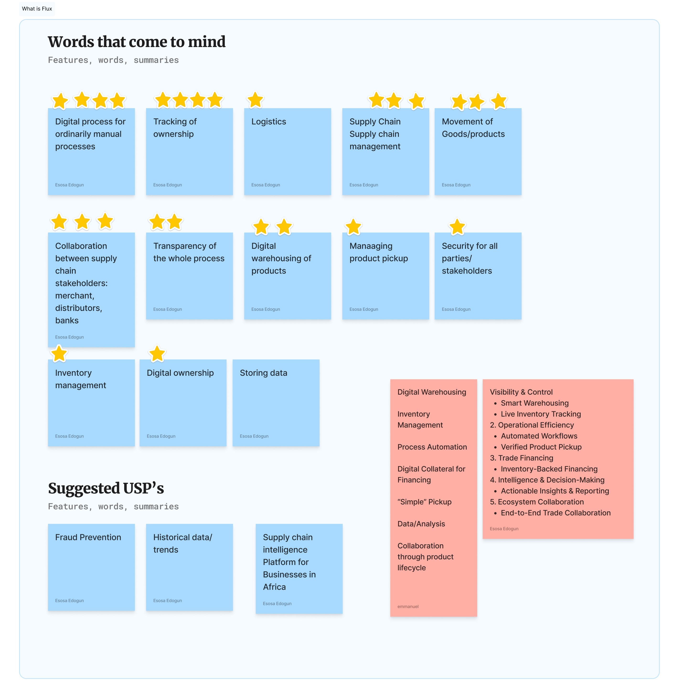
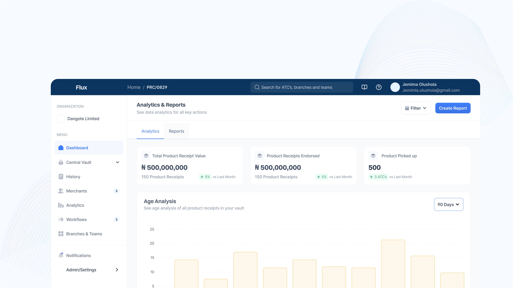

Inventory-backed lending · Nigeria · 2023–26
Flux
Designing trust in inventory-backed lending.
A product that started by digitising distributor financing and evolved into a supply chain intelligence platform.

Inventory-backed lending · Nigeria · 2023–26
Designing trust in inventory-backed lending.
A product that started by digitising distributor financing and evolved into a supply chain intelligence platform.
Chapter 01 · Before Flux
When a distributor needed inventory, the bank didn’t transfer money. It purchased the products directly from the merchant, on the distributor’s behalf.
In return the merchant issued a batch of paper collection documents: Authorities to Collect, or whatever that organisation called them. Each one was permission to collect a fixed quantity.
The bank held the whole stack in its vault and released them one at a time, each time the distributor repaid a portion of the loan.
Step 01 of 07
A batch of collection documents is written against real inventory sitting in a depot.
Scroll to follow the document
Chapter 02 · The paper trail
Every handoff in that journey was a person, a vehicle or a phone call, and it happened again for the next document, and the one after that.
Three of the seven steps are somebody physically travelling.
What that cost
3
separate journeys
per single pickup
×
repeated for every
document in the stack
30%
of distributor loans flagged for
delayed repayment in one quarter
And paper doesn’t scale.
Chapter 03 · Understanding the system
So instead of opening Figma, we started with conversations. The same workflow described three times, and nobody was describing the whole thing.
Keep scrolling
The bank’s real fear
Authority to Collect
30,000 L
Copied at the merchant
Staff hand the bank a duplicate and keep the original. The bank believes it holds collateral; the original walks out and collects the goods.
Copied downstream
A duplicate reaches a distributor. Two people can now present paper for the same 30,000 litres, and the depot has no way to tell them apart.
Nobody could see the process end to end, and nobody could prove which piece of paper was the real one.
Chapter 04 · Finding a common language
Authorities to Collect. Warehouse Receipts. Collection Documents. Different names, different formats, identical underlying concept: permission to take a specific quantity of goods somebody else has already paid for.
We could design around every company’s vocabulary, or we could model the thing underneath all of it.
The Product Receipt was that abstraction, one object carrying ownership, movement, financing and collection, whatever the business happened to call it.
Authority to Collect
Qty—
Holder—
Depot—
Warehouse Receipt
Qty—
Holder—
Depot—
Collection Document
Qty—
Holder—
Depot—
One model
Chapter 05 · Building the foundation
A platform serving three organisations with different operating models can’t be assembled screen by screen. Before the product, I built the system it would be made of.
Reusable components, documented interaction patterns and shared standards. It is what kept designers and engineers aligned as the workflows got heavier.

Chapter 06

One platform where banks, merchants and distributors work from the same Product Receipt, each seeing only the part of it they’re responsible for.
Chapter 07 · Designing for regulated industries
Four problems that only appear once real institutions use your software. Each one changed the product.
Problem 01
A credit officer at one bank can release a receipt alone. At another it needs three signatures in sequence. Hard-code either and you lock out the other.
So we built the workflow feature to cater to any organisation’s process. Approval flows can be customised based on organisation preferences.
An administrator assembles the chain their own institution actually uses, step by step, in order.
The same configuration, now attached to a live Product Receipt. Approving a step advances the receipt. The workflow isn’t a setting, it’s the path the object travels.
Problem 02
Banks need control over who inside their own organisation can see what. So access is gated by role: every user is assigned roles, and each role carries its own set of permissions, down to the individual and the department.
Roles are defined per organisation, then scoped down to the individual record, so the same Product Receipt shows a different truth to each party holding it.
Problem 03
In the paper process that answer lived in someone’s memory. Every action a Product Receipt passes through now writes itself down, in order, permanently.
Every receipt an organisation has issued, filtered by merchant and by period. The answer stopped living in somebody’s memory.
Problem 04
The bank physically stored the stack and handed out one document at a time. That behaviour didn’t disappear. It became a state. Receipts are held centrally and released against repayment, without anyone driving anywhere.
Every receipt the bank holds, in one place, and assigned out to a branch only when it’s due to be released. The room became a state.
Chapter 08 · Designing for merchants
Most already had internal systems they were happy with. What they lacked was visibility into what happened after a document left their hands, and a way to coordinate the pickups those documents authorised.
So the merchant side is built around four jobs, not four screens.
Type, method, details, review. The moment the paper slip became an object with a history, and the point every later chapter traces back to.
Who is collecting, in which vehicle, from which depot. The coordination that used to happen by phone.

Chapter 09 · Designing for distributors
They weren’t sitting behind desks. Another enterprise dashboard wouldn’t have increased adoption. It would have excluded exactly the people the system depended on.
So Flux Lite does one job. Everything else stays inside the platform.
The best interface here wasn’t the one with more features.
Flux Lite
01 Request a pickup
02 Receive a code
03 Show the code
04 Collect the products

Chapter 10 · The pivot
Not by screens. Not by releases. By purpose.
Very little of what we’d built was actually about lending. The Product Receipt was recording movement. Analytics were revealing operational behaviour. Workflows were coordinating organisations.
Every receipt generated operational data. Every pickup generated movement. Every approval generated context. Every repayment generated history.
Individually they solved workflow problems. Together they described an entire supply chain.
Inventory financing→Supply chain intelligence

We stopped asking what to build next, and started asking what decisions this platform should help businesses make.

Chapter 11 · Looking back
The best product decisions don’t begin with interfaces. They begin with better models.
At the beginning of this project, I thought I was designing software for inventory financing. That was only the entry point.
The harder challenge wasn’t designing dashboards. It was understanding the system well enough to simplify it without losing the rules that made it work.
The Product Receipt wasn’t valuable because it was digital. It was valuable because it gave every stakeholder a shared representation of the same business object.
When you model the business correctly, the software has a much easier job of making sense.